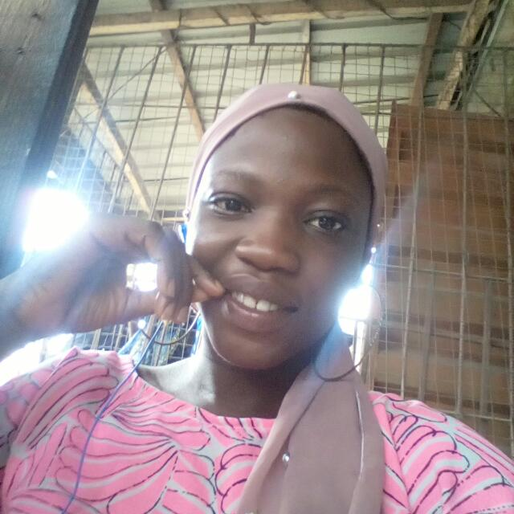

MY ACHIEVEMENT
- All thanks to Almighty Allah that has always be with me from the one of my life.
My achievement is overcoming the fear to face a competitive exam.
Back then when i was in secondary school, my teacher told me they will be a spelling bee competitive examination.
I started working hard in order to be one of the best student in the competitive examination.
i do not know where to start from but i have the confidence that i can do it.
I will not stagnate if i fail and i know how to maintain a stable mind whether it is a failure or success.
I encourage myself and decided to make hay while the sunshine and i started reading very well for me to be fully prepared for the examination.
There are lot of student that willing to be the best by going to the library and lending books there.
The examination approach and i did my best but to my greatest surprise i came out in fly colours.
click here